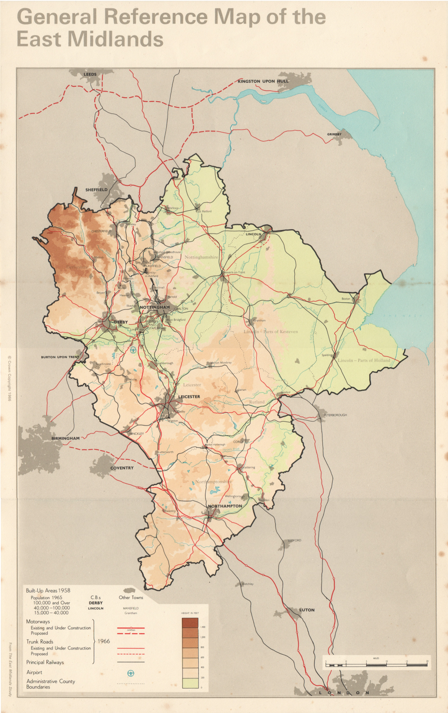
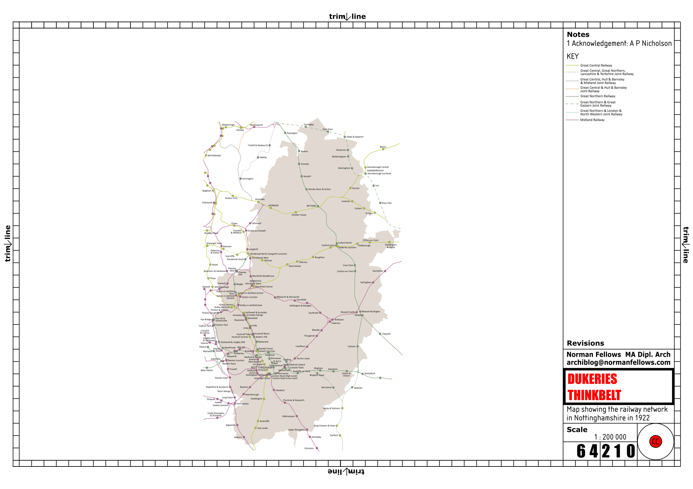
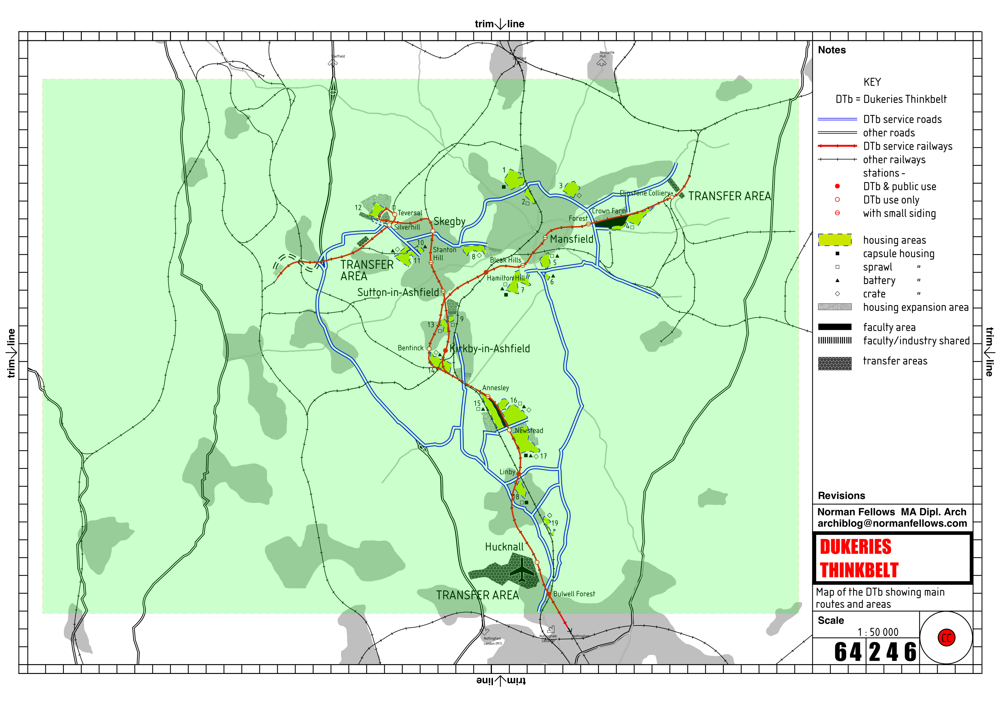
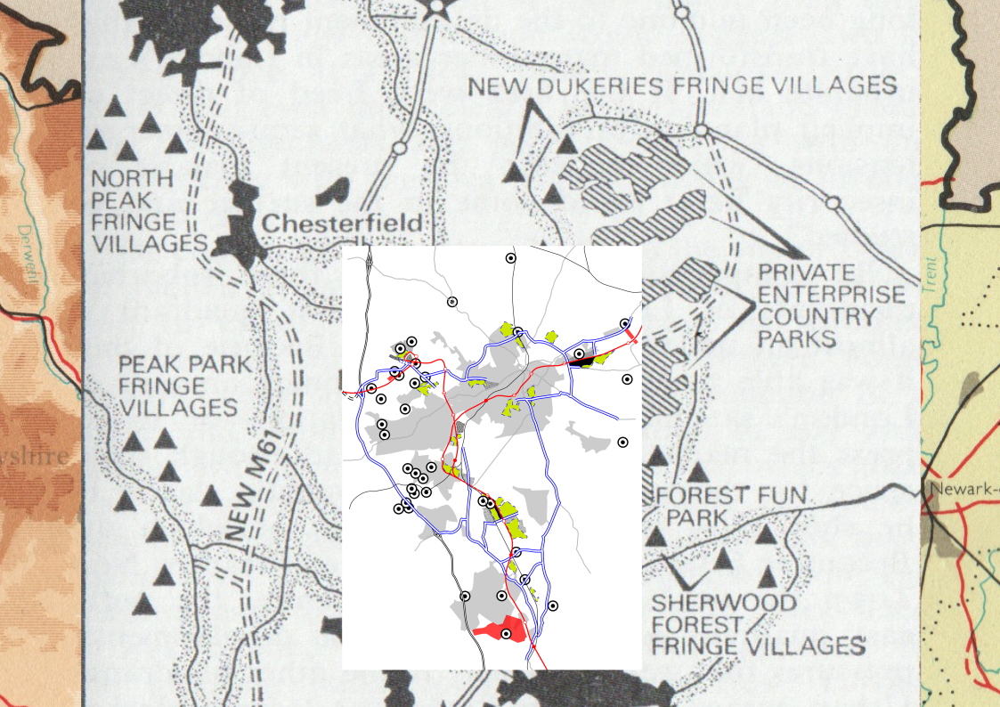

The Dukeries occupies a strategic position within the East Midlands between Sheffield and Nottingham, situated within a larger network of settlements, transport corridors, and industrial landscapes.
Catalogue Entry 01 — Dukeries Thinkbelt
An ongoing investigation into distributed educational infrastructure, post-industrial territory, and anticipatory design.
[](https://doi.org/10.5281/zenodo.20775761)
The project treats DTb not as a fixed historical object, but as a living framework: a system of territory, learning, mobility, and civic reorganisation.
Dukeries Thinkbelt explores the relationship between learning, infrastructure, and landscape in West Nottinghamshire. The repository is organised as a working field rather than a finished statement.
It gathers drawings, notes, references, territorial observations, and conceptual fragments in a structure that can grow recursively over time.
The pages in this repository are grouped by function rather than by finality. Some are archival, some analytical, and some speculative. Together they form a map of the project’s physical, institutional, and philosophical layers.
"To this day, if it's not gold, coal, oil or silver, if you own the mineral rights you can hollow the land of its resources and pocket the value. The Dukes of Norfolk and Rutland mined the land they owned in Sheffield for its iron ore, likewise the Dukes of Buccleuch, Hamilto and Portland. A hundred years after the Rufford Park poachers, Lord Savile leased the manor of Ollerton to a coal-mining company. The surrounding area is still known as the Dukeries, because of the enormous swathes of land (around 88,000 acres) in Nottingham that were owned by just four men, the Dukes of Norfolk, Portland, Kingston and Newcastle — they, too, enclosed the land, and leased it to mining companies, transferring its wealth from the people that once used the common lands, into their own pockets."
Nick Hayes (2020) The Book of Trespass: Crossing the lines that divide us'
The Dukeries Thinkbelt did not begin with a building, a campus, or a defined site. It began with a territory.
Long before the proposal emerged, the Dukeries had been shaped by successive processes of estate ownership, enclosure, mineral extraction, railway development, industrial growth, and subsequent decline. The territory inherited by the Thinkbelt was therefore not an empty landscape but a complex system of land, infrastructure, settlement, and social relations.
Understanding these conditions is essential to understanding the proposal itself. DTb did not invent a network; it reinterpreted one. Rather than treating architecture as the design of isolated objects, the project operated at the scale of the territory, exploring relationships between learning, mobility, industry, housing, and future development.
The maps that follow trace this transition from inherited landscape to educational territory, revealing how infrastructure, institutions, and regional futures can be understood as interconnected parts of a larger territorial system.
Four maps tracing the transformation of a regional landscape from inherited infrastructure to speculative educational territory.

The Dukeries occupies a strategic position within the East Midlands between Sheffield and Nottingham, situated within a larger network of settlements, transport corridors, and industrial landscapes.

Before the Dukeries Thinkbelt proposal, Nottinghamshire possessed a dense railway territory. The project did not invent a network; it inherited and reinterpreted one.

The Thinkbelt reorganised existing transport infrastructure into a distributed educational system linking learning, industry, housing, and mobility across the former coalfield.

Beyond education, the proposal implied new forms of settlement and regional organisation. The diagram suggests an evolving relationship between infrastructure, habitation, and territory.
Material and spatial systems: transfer areas, housing, rail, movement, and mapped territory.
Organisational systems: decentralised learning, community service, institutional structure, and operational logic.
Philosophical systems: commons, social reorganisation, lifelong learning, and the place of the individual in society.